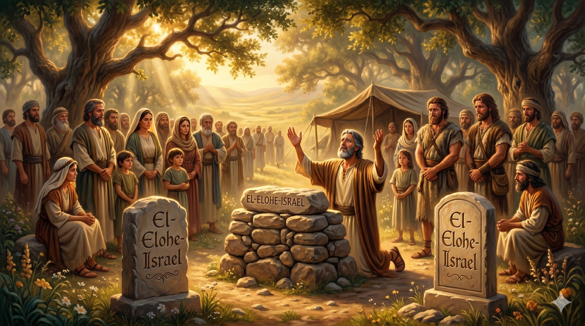

달려와 야곱을 끌어안는 에서 — 20년 만의 형제 화해, 눈물의 포옹
에서가 달려와서 그를 맞이하여 안고 목을 어긋맞겨 그와 입맞추고 피차 우니라 에서가 눈을 들어 여인들과 자식들을 보고 묻되 너와 함께 한 이들은 누구냐 야곱이 이르되 하나님이 주의 종에게 은혜로 주신 자식들이니이다 … 야곱이 이르되 그렇지 아니하니이다 내가 형님의 눈앞에서 은혜를 입었사오면 청하건대 내 손에서 이 예물을 받으소서 내가 형님의 얼굴을 뵈온즉 하나님의 얼굴을 본 것 같사오며 형님도 나를 기뻐하심이니이다 — 창세기 33:4–5, 10
야곱은 20년 만에 고향으로 돌아오는 길에 에서가 400명을 거느리고 온다는 소식을 듣습니다. 그는 극도의 두려움에 사로잡혔습니다. 장자권을 빼앗고 도망쳤던 그 오래된 죄책감이 다시 무겁게 짓눌렀을 것입니다. 그러나 하나님은 그 두려운 밤 얍복강에서 야곱을 만나 씨름하게 하셨고, 그를 이스라엘로 새롭게 하셨습니다. 화해의 장면에서 먼저 달려온 것은 에서였습니다. 에서는 원한을 품은 형이 아니라, 눈물로 아우를 끌어안는 형으로 나타났습니다. 하나님은 야곱이 두려워하는 동안 에서의 마음을 미리 준비하고 계셨던 것입니다.
야곱의 고백 "형님의 얼굴을 뵈온즉 하나님의 얼굴을 본 것 같사오며"는 이 화해 장면의 절정입니다. 야곱은 얍복강에서 하나님의 얼굴을 구했고(창 32:30), 이제 에서의 용서하는 얼굴 속에서 다시 하나님을 봅니다. 진정한 화해는 단순히 사람 사이의 관계 회복이 아닙니다. 그것은 하나님의 은혜가 인간관계를 통해 흘러 들어오는 거룩한 사건입니다. 야곱이 숙곳에 집을 짓고 세겜에 단을 쌓으며 "엘엘로헤이스라엘(이스라엘의 하나님은 강하신 하나님)"이라 이름 붙인 것은, 이 화해 여정을 통해 만난 하나님을 향한 고백이었습니다.

세겜 땅에 단을 쌓는 야곱 — "엘엘로헤이스라엘"이라 이름하다, 화해의 하나님이 이스라엘의 강하신 하나님이심을 고백하다
우리 삶에도 오랫동안 마주하기 두려운 관계가 있습니다. 상처를 준 사람, 오해가 쌓인 가족, 갈라진 친구. 야곱처럼 우리도 그 관계 앞에서 두려움에 발이 묶이곤 합니다. 그러나 하나님은 우리가 화해를 향해 걸음을 내딛을 때 그 앞에서 이미 일하고 계십니다. 에서의 마음을 준비하신 것처럼, 상대방의 마음에도 하나님이 먼저 역사하고 계실 수 있습니다. 두려움을 핑계로 화해를 미루지 마십시오. 야곱처럼 걸어가십시오 — 넘어져도 절뚝거려도 앞으로.
야곱이 에서의 얼굴에서 하나님을 보았다는 고백은 매우 중요한 가르침을 담고 있습니다. 우리가 용서를 받을 때, 혹은 용서를 베풀 때, 그 순간에 하나님의 얼굴이 드러납니다. 가정에서, 직장에서, 교회에서 화해와 용서의 일이 일어날 때, 그것은 단순한 감정의 해소가 아니라 하나님의 은혜가 땅 위에 임하는 사건입니다. 오늘 당신이 먼저 화해의 손을 내밀 수 있습니까? 그 손이 하나님의 손이 됩니다.
야곱이 두려워했던 에서는 달려와 그를 끌어안았습니다 — 하나님이 미리 가셔서 길을 만드셨기 때문입니다.
당신도 두려워하는 그 관계 앞으로 걸어가십시오. 하나님이 먼저 가셨습니다.
화해의 얼굴 속에서 하나님의 얼굴을 만나게 될 것입니다.